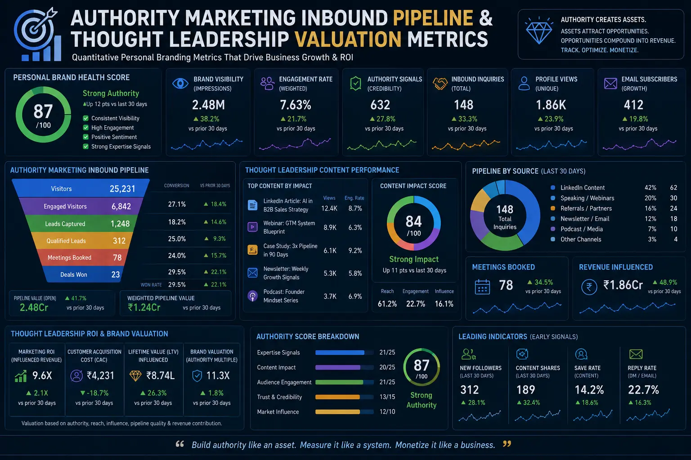
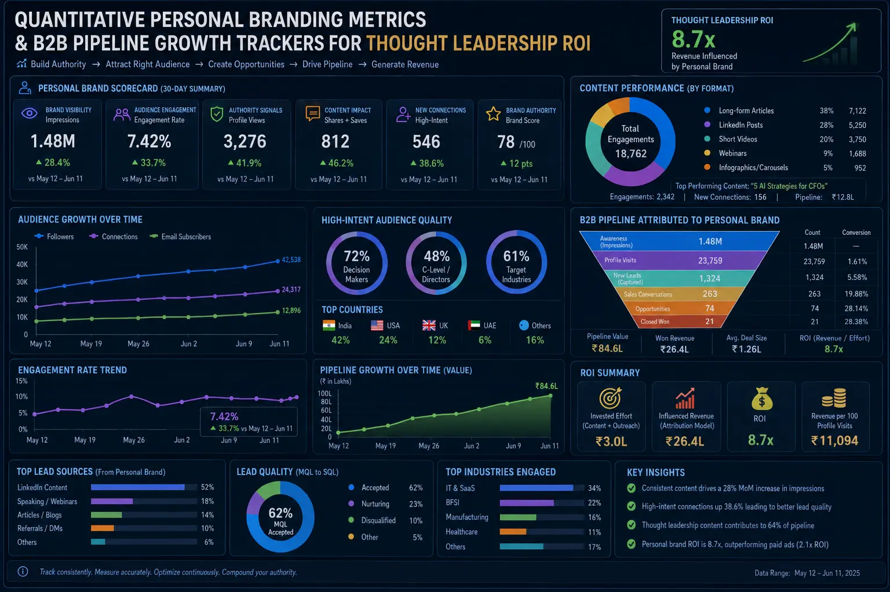

Tracking the Quantitative Personal Branding Metrics That Drive Cold Financial Growth
Why Most Personal Brands Fail to Generate Measurable Business Results
In the modern B2B ecosystem, the intellectual capital and market reputation of a company's leadership team are no longer just soft assets—they are direct drivers of financial growth. Historically, executive visibility was viewed as an intangible quality, built through networking events, industry panels, and public relations campaigns. However, in today's digital first landscape, reputation has been digitized and scaled into personal brands. The challenge that organizations face is not the creation of these brands, but the absence of analytical rigor in tracking their financial outcomes. To move past qualitative assumptions, companies must implement a systematic approach based on robust Personal Branding Metrics to monitor and optimize how their thought leadership translates into direct revenue. By deploying structured Personal Branding Metrics, companies can accurately measure conversion velocities and scale their marketing campaigns.
Many marketing departments fall into the trap of tracking vanity metrics—such as social media views, likes, shares, and follower growth. While these numbers look impressive on monthly reports, they do not pay bills and rarely correlate with actual business pipeline growth. A post that receives 100,000 views but fails to engage target decision-makers is commercially useless. Therefore, the focus of Measuring personal brand impact must shift from tracking attention to tracking commercial intent and pipeline contribution. Without continuous tracking, Measuring personal brand impact remains speculative and cannot justify marketing spend. By deploying integrated B2B pipeline growth trackers that attribute inbound lead flow, sales opportunities, and closed contracts to specific personal brand activities, businesses can turn executive visibility into a highly predictable client acquisition engine.
To bridge the gap between content creation and financial growth, organizations must deploy a structured framework for Measuring Thought Leadership Inbound ROI. This involves identifying every touchpoint where a prospect interacts with an executive's content and mapping it to downstream sales actions. Whether a prospect reads an article on LinkedIn, listens to a podcast interview, or downloads a proprietary framework, each interaction must be quantified. By analyzing this journey through the lens of Authority Valuation Funnel Analytics, sales and marketing teams can measure how trust is built over time and optimize their messaging to accelerate prospects through the sales cycle.
The Fallacy of Vanity Metrics vs. Hard Commercial Outcomes
For too long, the personal branding industry has relied on qualitative success stories and superficial engagement numbers to justify its value. An executive gets a few comments on a post and assumes their brand is thriving. However, in B2B service sectors and enterprise sales, where deals are complex and sales cycles are long, qualitative feedback is not enough to sustain investment. To build a truly scalable brand, companies must implement quantitative Personal Branding Metrics that focus on commercial conversion points. Therefore, setting up Personal Branding Metrics is the first step toward commercial accountability and pipeline efficiency. This requires establishing clear attribution pathways. For example, when a prospect submits a contact form or books a discovery call, the intake system must capture the precise discovery source. Did they find the executive through a specific LinkedIn article? Did they hear them speak on a particular industry panel? By collecting this data, organizations can begin Measuring personal brand impact in financial terms, comparing the customer acquisition cost (CAC) of brand-generated leads against paid ads or cold outbound campaigns. Furthermore, tracking these outcomes allows marketing teams to refine their content strategy. If the data shows that deep-dive technical articles generate fewer views but a significantly higher volume of qualified sales calls compared to broad motivational posts, the team can immediately pivot their strategy. This data-driven approach ensures that content is created not to maximize reach, but to drive qualified inquiries, making the brand a direct contributor to the organization's growth. By regularly reviewing Measuring Thought Leadership Inbound ROI data, organizations can ensure that their marketing spend is being utilized effectively.
Understanding the Authority Valuation Funnel
The traditional B2B marketing funnel is built on volume—driving thousands of generic leads into the top of the funnel and filtering them down through automated nurturing sequences. In contrast, the authority funnel is built on alignment and trust. Because B2B buyers are more skeptical than ever, they do not want to be sold to by generic companies; they want to buy from recognized experts. This is why Authority Valuation Funnel Analytics is so critical. It provides the mathematical framework to measure how trust is built and converted into revenue. With Authority Valuation Funnel Analytics, B2B companies can map their entire sales journey and identify high-value touchpoints. The authority valuation funnel consists of four distinct stages: discovery, authority recognition, trust validation, and commercial intent. In the discovery stage, prospects encounter the executive's thought leadership for the first time, often via search or social shares. In the authority recognition stage, they engage with more complex content, realizing that the executive has a unique and valuable perspective on their industry's problems. In the trust validation stage, they seek out deeper proof of expertise, looking for case studies, detailed guides, and client results. Finally, in the commercial intent stage, they initiate a sales conversation. By utilizing Authority Valuation Funnel Analytics, organizations can track the conversion rates between each of these stages. If a company notices a high drop-off rate between authority recognition and trust validation, it indicates a lack of proof assets, signaling that the executive needs to publish more case studies and client testimonials. By constantly optimizing these conversion points, companies can build a highly efficient path for organic client acquisition and accurately scale their B2B campaigns.
Direct Pipeline Attribution
By utilizing integrated B2B pipeline growth trackers in your CRM, you can trace the exact content piece or campaign that initiated a sales conversation, ensuring 100% accurate revenue attribution.
Shorter Sales Cycles
A strong personal brand builds deep trust before the first sales call. This pre-established authority dramatically accelerates prospect decision-making, helping you compress your B2B sales cycle.
Higher Contract Value
When prospects view you as a premier authority rather than a commodity service provider, their price sensitivity drops, allowing you to secure premium contract values and higher margins.
Outbound Sales Support
Executive brand visibility creates a powerful halo effect for outbound sales teams. Prospects who recognize the founder's name are significantly more likely to accept cold outreach and book meetings.

Google Search Volume Data Tracking as a Leading Indicator
One of the most reliable leading indicators of personal brand growth is branded search volume—the number of people who search specifically for the executive's name or their proprietary frameworks on search engines. This is where Google search volume data tracking becomes an essential component of your analytics stack. Unlike social media impressions, which can be passive, a Google search is an active, high-intent action. It shows that a prospect has been exposed to the brand elsewhere and is now taking a deliberate step to learn more. Thus, Google search volume data tracking serves as a reliable barometer of executive visibility. By tracking branded search queries monthly using tools like Google Search Console, Google Trends, and SEMrush, companies can measure the secondary impact of offline and online activities. For example, if an executive delivers a keynote speech or appears on a major industry podcast, a subsequent spike in branded search volume proves that the activity successfully built top-of-mind awareness. To capture and convert this high-intent traffic, the executive's personal website must be optimized. When searchers click through to the website, they must be greeted with high-converting pages that use conversion rate optimization visuals—such as clear authority badges, client video testimonials, and visual breakdowns of the executive's proprietary methodology. By combining Google search volume data tracking with page optimization, organizations can turn passive searchers into active pipeline opportunities.
Calculating the Financial Returns of Thought Leadership
For any marketing initiative to receive sustained funding, it must prove its financial return. Personal branding is no exception. Measuring Thought Leadership Inbound ROI involves comparing the total costs associated with brand development against the revenue generated by brand-influenced deals. By formalizing the process of Measuring Thought Leadership Inbound ROI, C-suite executives can defend their budgets and optimize content allocation. The investment side of the equation includes all content production costs, video editing fees, platform management expenses, and the executive's time. The return side is calculated by tracking two types of conversions: direct and assisted. A direct conversion occurs when a prospect reaches out and explicitly states they decided to contact the company after reading the executive's articles. An assisted conversion occurs when a prospect enters the sales funnel through another channel, but their CRM record shows they consumed multiple thought leadership pieces before closing. By using B2B pipeline growth trackers to aggregate this data, companies can calculate a comprehensive ROI figure. Often, this analysis reveals that thought leadership leads have a significantly lower customer acquisition cost and a higher lifetime value than leads acquired through paid advertising, proving that Measuring Thought Leadership Inbound ROI is one of the most cost-effective long-term growth channels available.
Search and Intent Tracking
- Use Google Search Console to monitor monthly search impressions and clicks for the executive's name to measure organic demand.
- Track relative search popularity using Google Trends to identify brand interest spikes after key public events or podcast releases.
- Compare branded search volume against key industry competitors to measure authority share-of-voice over time.
- Combine search analytics with Google search volume data tracking to identify high-potential search terms and queries.
Conversion Optimization Visuals
- Implement high-impact visual methodology diagrams on key landing pages to explain complex business frameworks instantly.
- Embed video case studies and trust badges to build immediate visual credibility for visiting prospects.
- Run A/B tests on call-to-action buttons to maximize the percentage of search traffic that books a call.
- Integrate conversion rate optimization visuals like funnel charts to analyze page drop-off points.
Pipeline Attribution Setup
- Create custom CRM fields to tag leads that have been influenced by executive thought leadership for accurate tracking.
- Configure UTM tracking parameters for all links shared in social media posts and newsletters to capture referral data.
- Conduct structured sales discovery calls that ask prospects to describe their content consumption history.
- Deploy B2B pipeline growth trackers to trace organic leads from first click to signed contract.

Analyzing Inbound Client Acquisition Velocity
In B2B sales, time is the enemy of deals. The longer a prospect stays in the pipeline, the more opportunities arise for them to lose interest, get distracted, or choose a competitor. This is why analyzing inbound client acquisition velocity is so critical for companies leveraging executive brands. Leads that enter the pipeline via thought leadership channels consistently progress through the sales cycle at a much faster rate than cold leads. This acceleration is caused by the trust that has been built prior to the first sales conversation. When a prospect has spent months reading an executive's articles, watching their videos, and studying their frameworks, they enter the sales call with a high level of pre-awareness. They do not need to be educated on the company's capabilities or convinced of its expertise; they already believe in the methodology. By tracking and analyzing inbound client acquisition velocity, sales leaders can see the exact impact of this pre-built trust. Measuring the average days from initial inquiry to proposal presentation, and from proposal to signed contract, typically reveals that authority-driven leads close 30% to 50% faster than traditional inbound or outbound leads. This velocity increase directly boosts cash flow and reduces the sales resources required to close each deal. When you are continuously analyzing inbound client acquisition velocity, you can adjust your resource allocation to focus on the highest-velocity channels.
A Scientific Approach to Thought Leadership Valuation
To elevate personal branding from a marketing tactic to a strategic corporate asset, organizations must adopt a formal framework for thought leadership valuation. This process assigns a tangible dollar value to the intangible brand equity of the company’s key executives, allowing the business to treat the personal brand as an appreciating asset on the corporate balance sheet. Every professional services firm should adopt a systematic model for thought leadership valuation to quantify brand value. A robust thought leadership valuation model evaluates several key financial components: First, organic traffic value. By tracking the volume of traffic driven to the company website through branded searches and executive content, and calculating what it would cost to purchase that same traffic via Google Ads, companies can assign a direct replacement value to their organic brand reach. Second, media and speaking value. The equivalent advertising value of podcast appearances, keynote invitations, and press mentions provides a clear measure of the brand's media reach. Third, the authority pricing premium. Companies led by recognized authorities can command higher pricing than their competitors. The difference between the company's average contract value and the industry average represents the financial premium enabled by the brand. By documenting these values, businesses can demonstrate that the personal brand of their leadership is a valuable asset that drives enterprise value. Implementing a structured thought leadership valuation framework ensures that the branding budget is evaluated with the same financial scrutiny as any other corporate investment.
Aligning Marketing and Sales with B2B Pipeline Growth Trackers
One of the most common points of friction in B2B organizations is the gap between marketing activities and sales results. Marketing teams focus on content creation, while sales teams focus on closing deals. To close this gap, companies must implement shared B2B pipeline growth trackers that align both departments toward the same goal: revenue generation. When sales and marketing collaborate, they can refine their Authority Valuation Funnel Analytics model to target the most profitable clients. These trackers provide a shared dashboard that displays the exact path prospects take from content engagement to closed sale. For sales teams, the tracker shows which articles or videos a prospect has consumed before a call, allowing them to tailor their sales pitch to the prospect's specific interests. For marketing teams, the tracker reveals which content topics and formats generate the highest-value pipeline, allowing them to allocate their production resources more efficiently. This alignment creates a powerful feedback loop. When the sales team shares the common objections and questions they hear on discovery calls, the marketing team can immediately create thought leadership content that addresses those points. This content is then tracked using B2B pipeline growth trackers, proving its direct impact on closing rates, sales velocity, and overall customer acquisition.
Conversion Rate Optimization Visuals for Trust Building
Once a personal brand successfully drives high-intent traffic to your website through Google search volume data tracking, the next challenge is conversion. Many executive websites fail to convert visitors because they are text-heavy and fail to communicate value quickly. In the B2B world, where decision-makers have limited time, using conversion rate optimization visuals is essential to capture attention and build immediate trust. Visual assets—such as custom methodology diagrams, comparative data charts, trust badges, and video testimonials—are highly effective at communicating complex concepts in a matter of seconds. For example, rather than writing a long paragraph explaining your consulting process, presenting a clear, step-by-step visual diagram helps prospects understand your approach instantly. By systematically testing and refining these conversion rate optimization visuals on landing pages, companies can increase the conversion rate of brand-attributed traffic. A 1% increase in conversion rate on high-intent search traffic can lead to a significant increase in qualified inquiries, directly multiplying the ROI of your personal brand campaigns and turning organic reach into predictable revenue. It is important to match these conversion rate optimization visuals with specific landing page goals.
Analyzing Inbound Client Acquisition Velocity to Optimize Sales Resources
Focusing on analyzing inbound client acquisition velocity allows sales leaders to make smarter decisions about how they allocate their human and financial resources. Because authority-driven leads are pre-qualified and close faster, they should be prioritized by the sales team. Ultimately, Measuring personal brand impact comes down to revenue, and sales cycle efficiency is a primary driver of that revenue. To maximize the value of these leads, companies should establish dedicated sales playbooks. When an inquiry is flagged as brand-attributed, it should bypass standard automated nurturing and be routed directly to a senior sales representative. The response time should be minimized, and the sales conversation should focus on tailoring the executive's methodology to the prospect's specific challenges, rather than pitching generic services. By tracking and analyzing inbound client acquisition velocity for these prioritized leads, companies can optimize their sales pipeline, reduce administrative overhead, and ensure that their highest-value opportunities are closed with the maximum efficiency. Continuously analyzing inbound client acquisition velocity allows the organization to build a scalable and highly efficient revenue model.
Building a Metrics-Driven Brand Engine with The PhD Ads
In the modern business environment, a founder's or executive's personal brand is a powerful commercial tool—but only if it is managed with the same rigor and analytical discipline as any other business department. At The PhD Ads in Madurai, we specialize in helping founders, executives, and service providers build metrics-driven personal brands that translate directly into business growth. Our services cover every aspect of the personal branding journey—from content architecture and high-quality video production to the setup of B2B pipeline growth trackers and multi-attribution analytics. We don't just focus on visibility; we build the technical and visual infrastructure required for accurate thought leadership valuation and lead conversion, ensuring that your personal brand becomes a predictable engine for revenue growth. Whether you are looking to track branded search queries using Google search volume data tracking, optimize your website using conversion rate optimization visuals, or accelerate your sales pipeline by analyzing inbound client acquisition velocity, our team has the expertise to design and execute a personal branding strategy that delivers measurable financial results. We integrate these tools under a unified framework of Personal Branding Metrics to ensure that every campaign can be measured, evaluated, and optimized for success, thereby consistently Measuring personal brand impact.
Key Topics
Ready to Measure and Track the Financial Impact of Your Personal Brand?
At The PhD Ads in Madurai, we build metrics-driven personal branding systems—combining visual content production, structured pipeline attribution, and thought leadership valuation frameworks that quantify every aspect of your personal brand's commercial impact.
Email: team@e2o.in